IdeaCrew Rebrand
In 2026 I led IdeaCrew's rebrand, from first concepts through launch. The company had grown, was rethinking how it positions itself, and had never had formal brand guidelines. The result is an evolved mark and a system around it: colors, type, patterns, document and slide templates, and a Claude skill that keeps AI-written documents on brand.
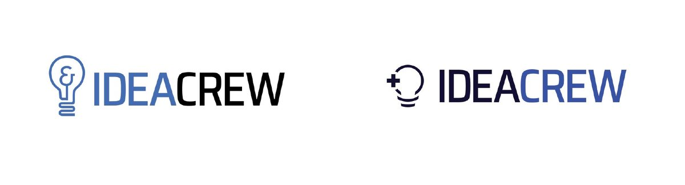
Research
I started by mapping themes the brand could draw on: light, development and technology, the ampersand, Washington, DC, the letters IC, and health care. Boards of reference marks helped show which ideas felt like IdeaCrew and which felt like everyone else.
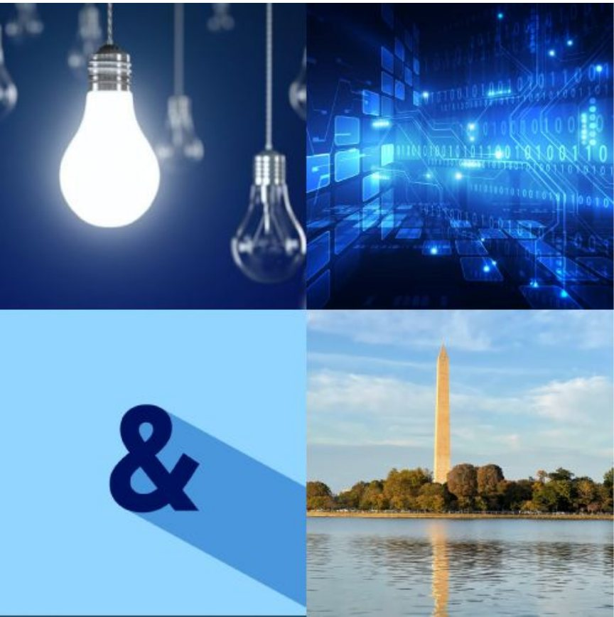
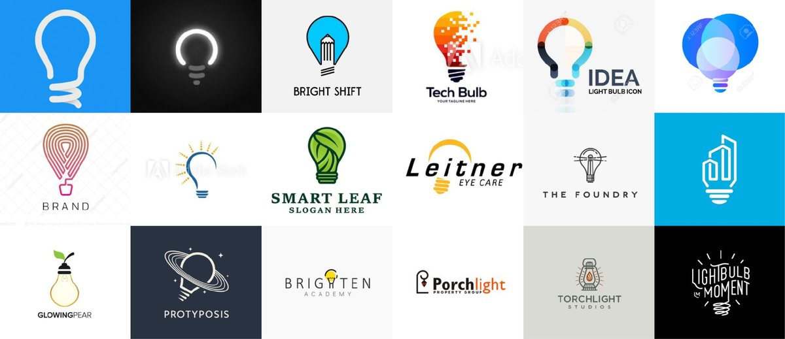
Exploration
Shape and font pairing ran through lightning bolts, brackets, interlocking letters and dozens of lightbulbs, each tested against different wordmarks. The strongest directions moved on to color themes, lockups and mockups.
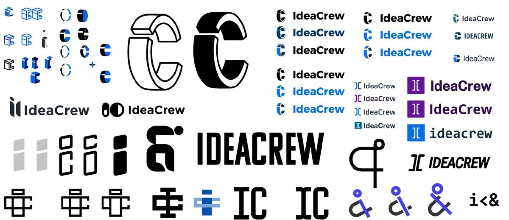
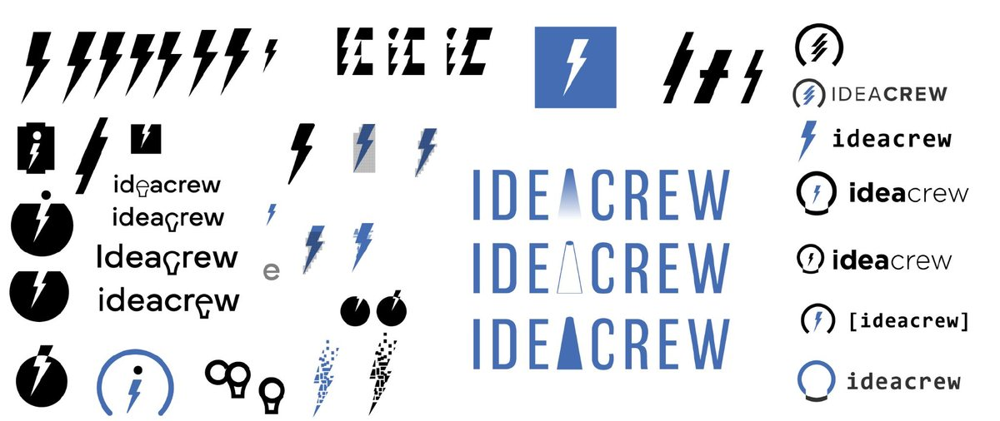
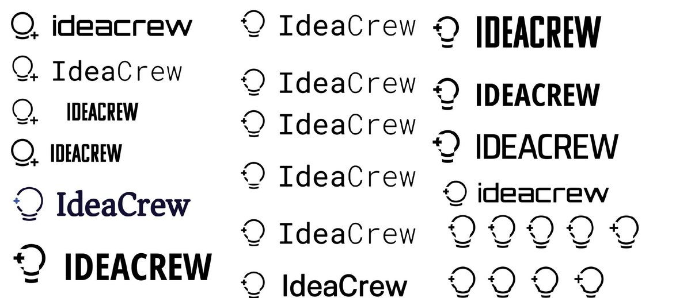
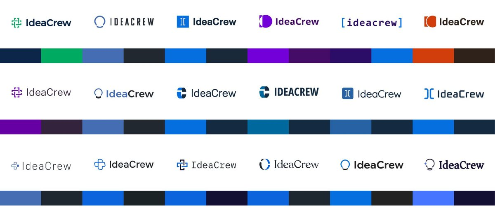
The decision
Leadership's feedback was clear: keep the lightbulb. So the new mark is an evolution, not a revolution. The incandescent bulb, old technology, became a simpler modern outline, and the ampersand inside it became a plus that reads as both "and" and health care. Colors were darkened for higher contrast.
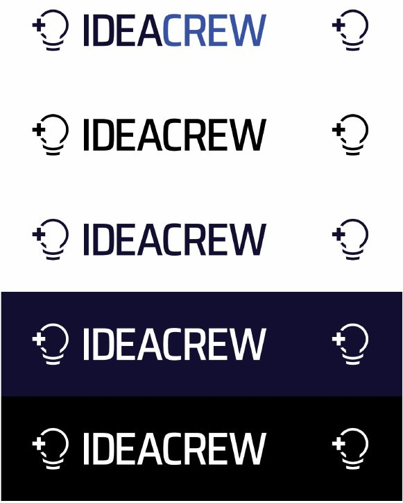
The system
Midnight Navy and Royal Blue carry the brand equally, with Deep Plum and Sky as accents in a 40/40/10/10 split. IBM Plex Serif Medium is the default typeface across nearly all marketing material. A family of patterns built from the plus extends the brand into backgrounds.
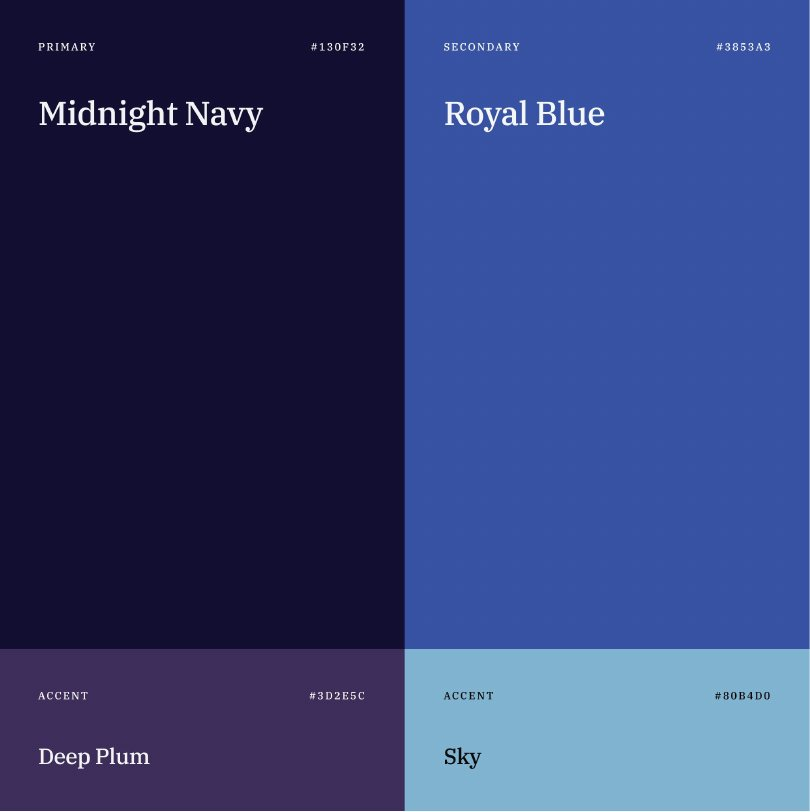
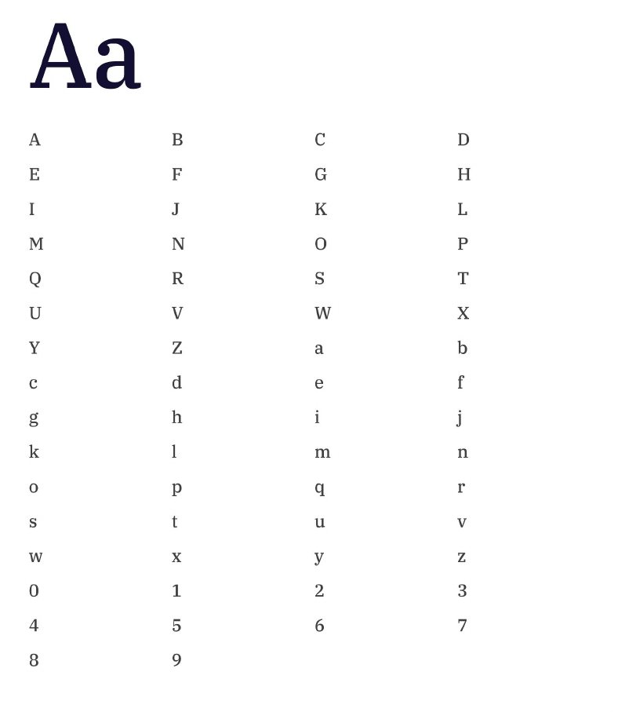
In use
The brand launched across marketing documents, document and slide templates, and a Claude skill, so documents written with AI come out on brand.
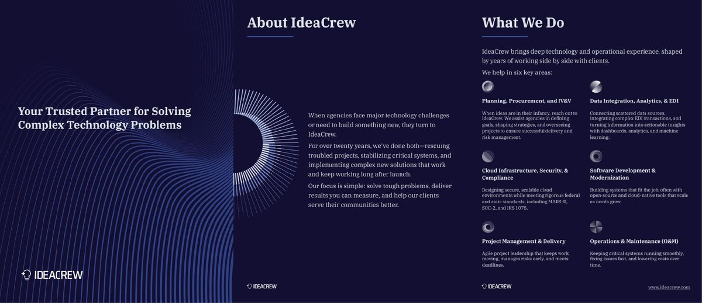
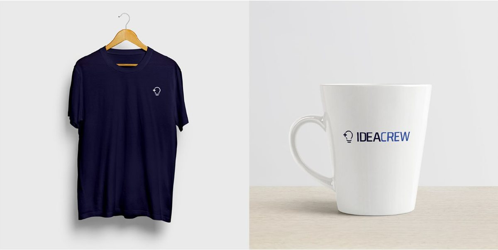